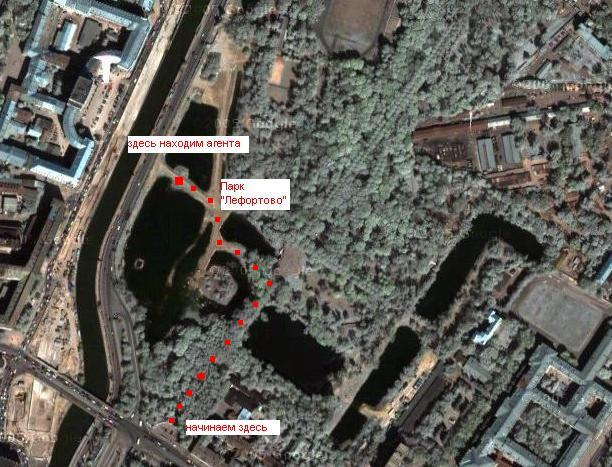

Игра №27
Тип игры: Закрытая
Описание: Авторы: Организаторы
Принадлежности: 2 автомобиля.
Фонарик.
Сотовый телефон.
Доступ в Интернет.
Цифровой фотоапарат.
3 круглых картошки среднего размера.
20-ок куринных яиц.
Уровень 1.
Задание Полевое :
Вам необходимо провести опрос среди населения. Вы даете попробовать новое восточное средство для снятия стресса. Агент скажет вам ключ, если вы подойдете к нему со словами «Вы хотите совершенно бесплатно попробовать новый способ из восточной медицины по снятию стресса?».
Ищите в районе чистых прудов (сквер + вокруг пруда).
Вы предлагаете попробовать прокрутить 2 яйца в ладони (как китайские шарики, шарики для снятия стресса) и после того, как потенциальный агент это делает, вы спрашиваете «Что вы чувствуете?».
При выполнении всего вышеперечисленного, агент скажет вам код.
Агенты - не "Рокеры" и т.п. Не трогайте их во избежание проблем :-)

Уровень 2.
Задание Полевое :

Задание Координаторское :
Вам необходимо сделать следующие вычисления, но без учета приоритета действий (т.е. по очереди, «умножить» и «поделить» не имеет приоритета перед «сложить» и «вычесть»).
К полученному приставить 8905 и позвонить по этому номеру для получения ключа.
204400683 + 9583724 * 200 / 34 + 9658 /234 + 3459
Уровень 3.
Задание Полевое :
Агент – 2 девушки. Одна одета в красное платье, у другой красно-белая юбка. Их можно найти на тверской. Необходимо подойти к ним и спросить с восточным акцентом «дэвушка, а сколко врэмени?». Она не отреагирует. Далее «дэвушка, а можно с вами познакомитца». Опять ноль реакции. После этого вы можете определить ключ по надписи на стекле, в сторону которого посмотрит кто-то их них.
Формат ответа: сх + первое из 3-ех слов. (на английском)
Задание Координаторское :

Уровень 4.
Задание Полевое :
Ключ расположен на одной из остановок на этой «Драгоценной жемчужине востока», на мусорке (внутрь лезть не надо).
Уровень 5.
Задание Полевое :
Формат ответа : Формат ответа: сх + название прачечной + надпись неизвестного умельца ниже вывески.
Уровень 6.
Задание Полевое :
Ключ: схепм8л
Это задание снимается.
Именно так бы назвали любого султана с его гаремом большинство русских бабушек, окажись он здесь со своими привычками по отношению к дамам.
В месте, где такой вот «5-ый» (как бы его назвали бабушки) упирается в шоссе имени станка, ищите ручей, а там ищите ключ.
Уровень 7.
Задание Полевое :
Расшифровать это поможет знание об одной из особенностей арабского языка.
Формат ответа: сх + фамилия + номер телефона.
Обратите звук с помощью стандартной программы "звукозапись". Эффекты->Обратить.
Уровень 8.
Задание Полевое :
Первых три буквы из названия улицы, можно вычислить из обидного прозвища для лиц, употребляющих много и/или часто алкоголь. Следующие 4 буквы – это первые 4 буквы одного из слов в названии темы игры.
Первый ключ находится на бортике хоккейной площадки, второй – фраза на разбитой табличке.(вам необходимо восстановить фразу)
Формат ответа: 1 ключ + 2-ой ключ
Уровень 9.
Задание Полевое :
Блины «Морозко» с творогом + Моя Семья, Апельсиновый, нектар с витамином С 2л + Lipton 1.25л Ice Tea Green + Lays Золотистые натуральные 25 гр. + Red Bull c Таурином 250мл + Coca cola 0.5 л + Рондо Лимон Мята + Dirol Арбузная свежесть 12 драже + Nestle classic for men (молочный с арахисом и изюмом) 100гр
Последних 8 цифр штрих-кода.
Формат ответа: сх + полученное число.
Уровень 10.
Задание Полевое :
Вам нужно приехать на пересечение Большой Бронной и Сытинского переулка.
Цифры указанные ниже помогут вам найти ключ.
3.27
1.23
1.16; 3.24
5.19.2
6.4
5.7.1; 2.4
5.5
1.20.2; 1.24; 3.24
5.19.2
3.27
4.2.2; 1.24; 2.5; 3.24
5.19.2
5.6
5.7.2; 2.4
5.19.2
5.7.2
3.29
1.21
2.4; 5.6; 6.16
3.29
3.28
3.27
Формат ответа: сх+ООО заведения+телефон заведения
Ответ:
схкамин2999980